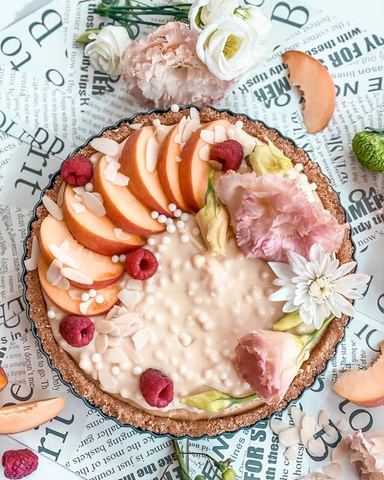

Letnji tart od bele čokolade i

Moja beleška
SačuvanoSastojci
- Podloga
- Fil
- Preliv
- Breskva pire
Priprema
Prvo pripremite breskva pire kako bi se ohladio dok vi pravite ostatak.. ☺️ Iseckane i oljuštene breskve sipate u šerpicu, dodate šećere, vodu, limunov sok i malčice cimeta pa na laganoj vatri ostavite da prokrčka. Pred kraj dodajte gustin i umešate dobro. Kada se prohladi štapnim mikserom ili blenderom napravite pire. Sastojke za podlogu sjedinite, pa kalup premažite malo puterom, utisnite smesu, uravnajte i ostavite na hladjenju. Na slabijoj temperaturi ringle stavite u šerpicu puter, otopite pa dodajte kondenzovano mleko, belu čokoladu, pustite da se rastopi i poveze, zatim breskva pire i za kraj u vrelu smesu koju ste sklonili sa ringle dodajte 1/2 zelatina koju ste ostavili da nadodje u nekih 30ml vode. Mešajte dok se zelatin totalno ne otopi pa ostavite da se prohladi. Preko podloge premažite po ukusu džem od kajisije pa izlijte i uravnajte ohladjen fil.. Posle hladjenja u frižideru izlijete preliv i onda možete i dekorisati.. 💓
Originalni opis sa Instagrama
Letnji tart od bele čokolade i 🍑 Hajmo malo da se poigramo ukusima i iskoristimo voće koje je aktuelno u sezoni, pa da krenemo od jedne lepe poslastice koja najavljuje vikend druženje ☺️☺️☺️ Podloga: •300 gr mlevene plazme •100 gr mlevenog badema •125 gr istopljenog putera •100 ml mleka •puna kašika nekog belog krema Fil: •60 gr putera •400 ml zasladjenog kondenzovanog mleka •100 gr bele čokolade •breskva pire * •1/2 zelatina (30 ml vode) ••džem od kajsije Preliv: •200 gr bele crispy čokolade •70 ml slatke pavlake Breskva pire: •450 gr oljustenih i iseckanih 🍑 •40 gr šećera •1 burbon vanila šećer •1 kašika vode •1 kašika limunovog soka •prhosvat soli •malo cimeta po ukusu •3,4 kašike gustina Prvo pripremite breskva pire kako bi se ohladio dok vi pravite ostatak.. ☺️ Iseckane i oljuštene breskve sipate u šerpicu, dodate šećere, vodu, limunov sok i malčice cimeta pa na laganoj vatri ostavite da prokrčka. Pred kraj dodajte gustin i umešate dobro. Kada se prohladi štapnim mikserom ili blenderom napravite pire. Sastojke za podlogu sjedinite, pa kalup premažite malo puterom, utisnite smesu, uravnajte i ostavite na hladjenju. Na slabijoj temperaturi ringle stavite u šerpicu puter, otopite pa dodajte kondenzovano mleko, belu čokoladu, pustite da se rastopi i poveze, zatim breskva pire i za kraj u vrelu smesu koju ste sklonili sa ringle dodajte 1/2 zelatina koju ste ostavili da nadodje u nekih 30ml vode. Mešajte dok se zelatin totalno ne otopi pa ostavite da se prohladi. Preko podloge premažite po ukusu džem od kajisije pa izlijte i uravnajte ohladjen fil.. Posle hladjenja u frižideru izlijete preliv i onda možete i dekorisati.. 💓 Uživajte u vikendu 🌸 • • • #tart #letnjitart #tartbezpecenja #breskvatart #tartodbelecokolade #brzoilako #ukusno #zadovoljnahr #idejezadezert #vocnidezert #summertime #summertart #summertarts #peachtart #nectarines #nectarinetart #nectarinedessert #deliciousfood #nobaketart